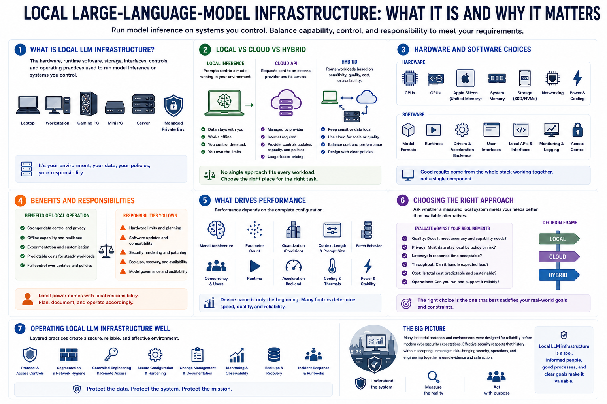

What Is Local LLM Infrastructure?
Connecting to LMS... Progress: in progress

Narration
Local large-language-model infrastructure is the hardware, runtime software, storage, interfaces, controls, and operating practices used to run model inference on systems you control. The model may live on a laptop, workstation, gaming PC, mini PC, server, or managed private environment.
Local inference sends prompts to a model running in that environment. A cloud API sends requests to an external provider under its service, security, pricing, and data-handling model. Hybrid designs may route different workloads according to sensitivity, quality, cost, or availability.
Hardware choices include CPUs, discrete GPUs, unified-memory systems such as Apple Silicon, system memory, storage, networking, power, and cooling. Software choices include model formats, runtimes, drivers, user interfaces, local APIs, monitoring, and access control.
Local operation can improve data control, offline capability, experimentation, customization, and cost predictability for steady workloads. It also transfers responsibility for hardware limits, software updates, security, backups, availability, and model governance to the operator.
Performance depends on the complete configuration. Model architecture, parameter count, quantization, context length, prompt size, batch behavior, concurrency, runtime, acceleration backend, and cooling can matter as much as the device name.
The right question is not whether local is always better. It is whether a measured local system meets the task's quality, privacy, latency, throughput, cost, and operational requirements more effectively than available alternatives.